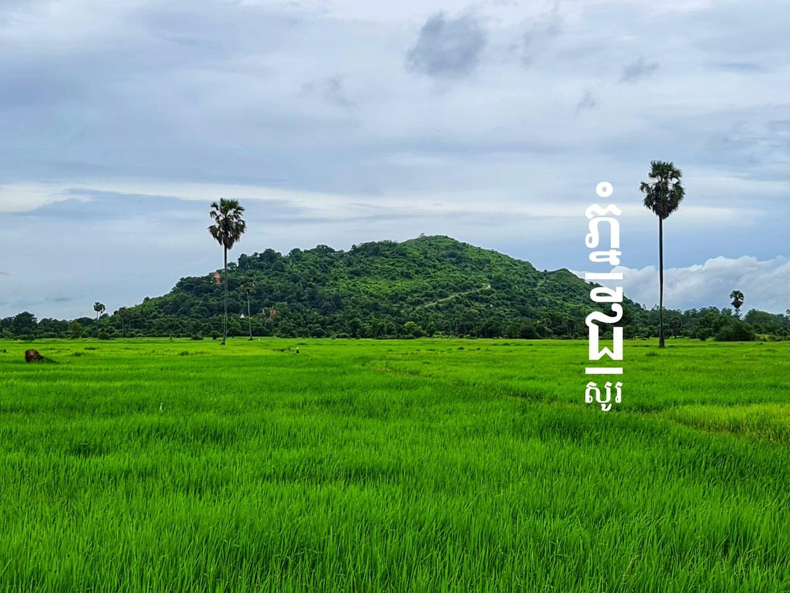
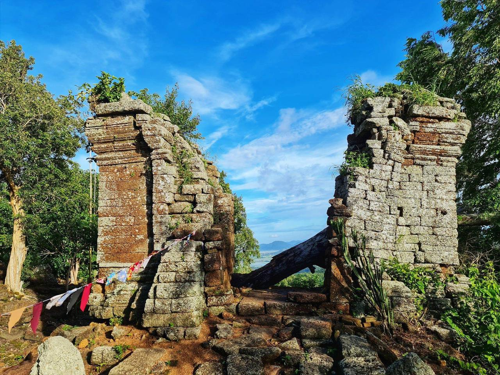
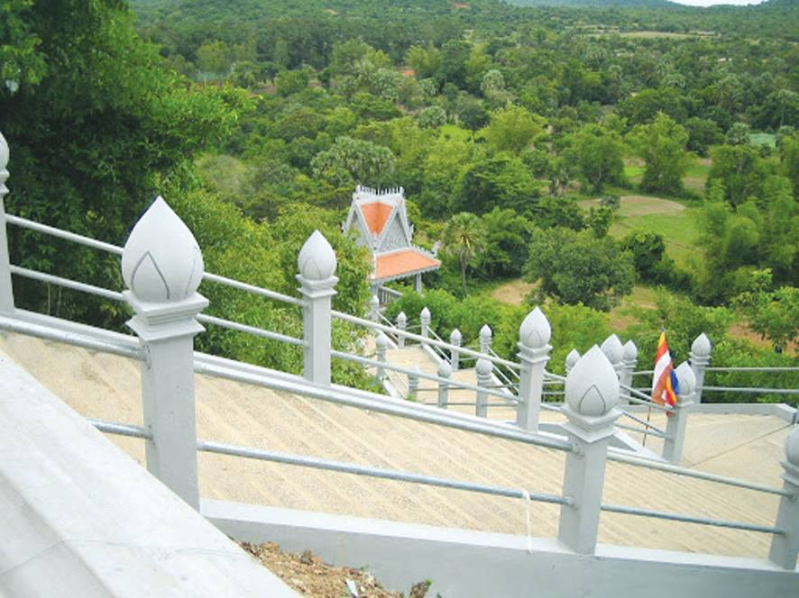
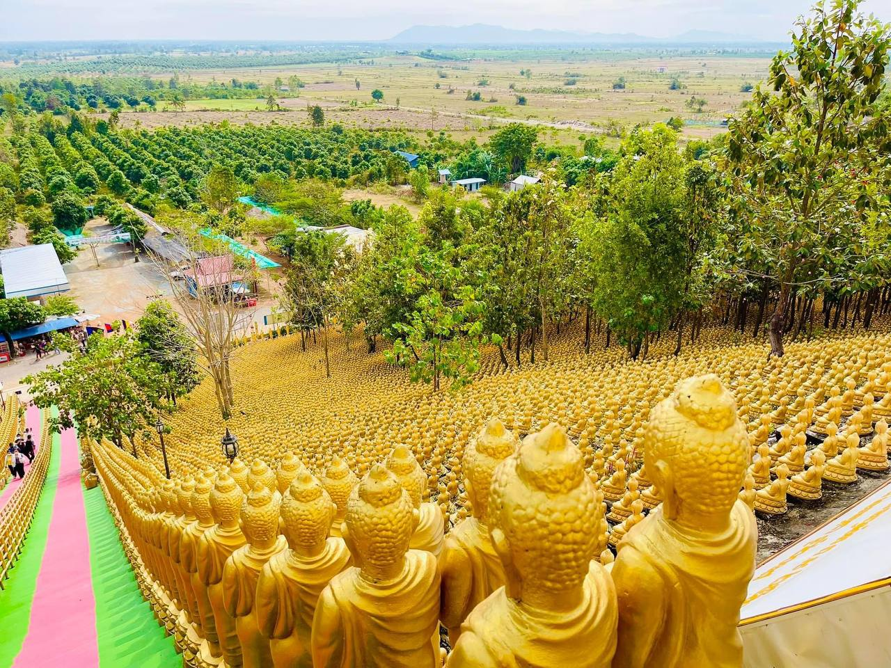

Down
This is my website[about Takeo.] | Ownership: No.6/Eab Rithea
សូមស្វាគមន៍មកកាន់ខេត្តតាកែវ
Welcome to Takeo Province
ទីតាំងផែនទី
រមណីយដ្ឋាន និងទីកន្លែងល្បីៗក្នុងខេត្តតាកែវរួមមាន:
Top
Home
1.ភ្នំជីសូរ
2.ភ្នំដានិងភ្នំអង្គរបុរី
3.ភ្នំតាម៉ៅ
4.ភ្នំប៉ាយ៉ង់កោ
5.ភ្នំខ្លែង
6.ភ្នំជីតាពេជ្រ
7.ភ្នំសន្លុង
8.ភ្នំពុទ្ធគិរី
9.ប្រាសាទជប់ពល
10.ប្រាសាទតាព្រហ្មទន្លេបាទី
11.ប្រាសាទនាងខ្មៅ
12.រមណីយដ្ឋានទន្លេបាទី
13.រមណីយដ្ឋានកំពូលពេជ្រឬអន្លង់ភ្ញៀវ
14.រមណីយដ្ឋានត្រីមាស
15.រមណីយដ្ឋានទឹកជ្រោះផ្អោក
16.ទំនប់ម្លិច
17.ទំនប់ត្នោតទេរ
18.ទំនប់ខ្ពបត្របែក
19.សារមន្ទីរខេត្តតាកែវ
20.សារមន្ទីរស្រុកអង្គរបុរី
21.តំបន់ការពារទេសភាពបឹងព្រែកល្ពៅ
22.ក្រុងដូនកែវ
23.ភ្នំចំបាប់
24.ស្ពានកំពង់ចក
25.បុកល្ហុងចុងត្នោត



